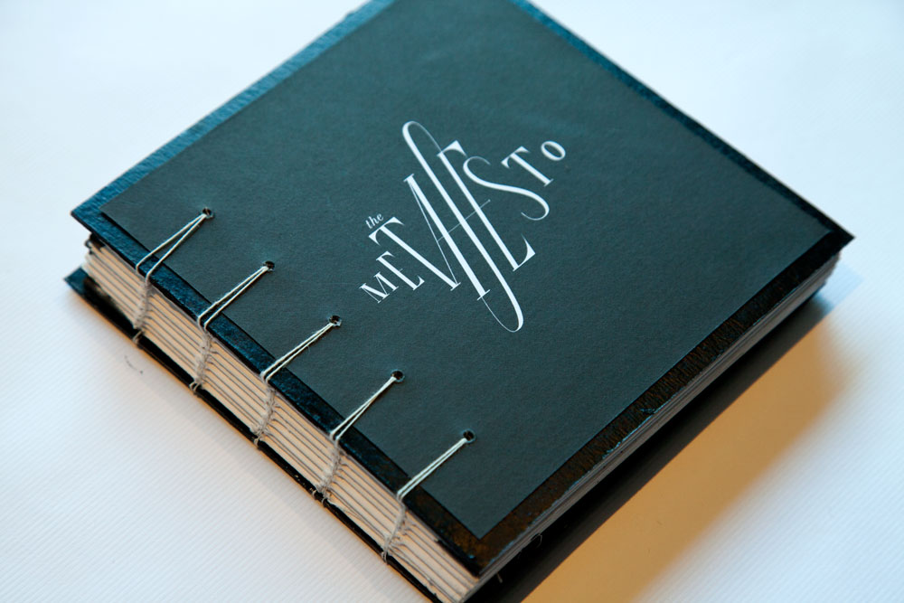
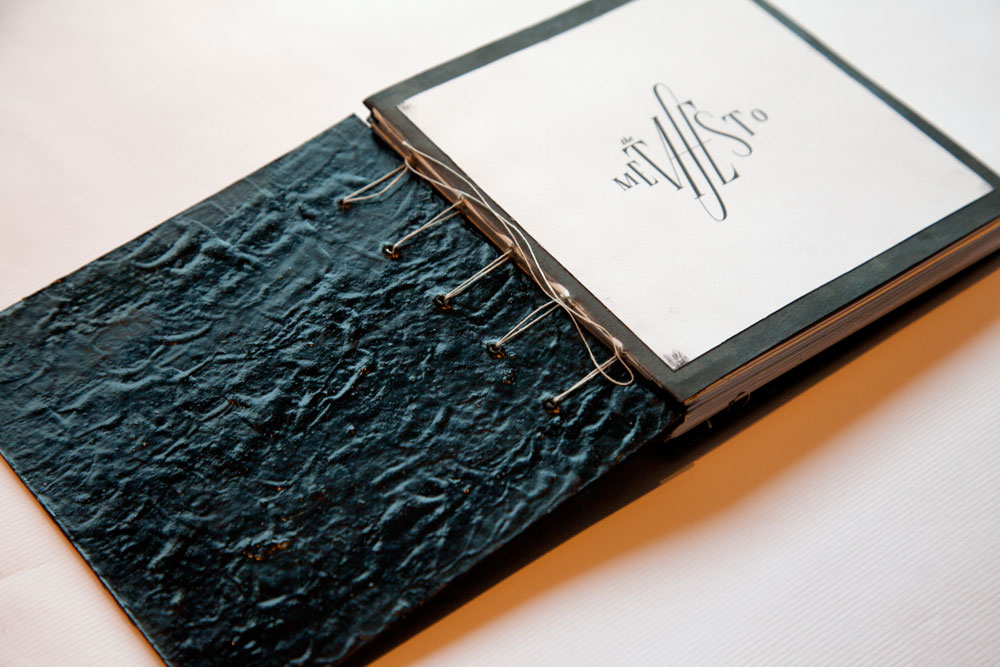
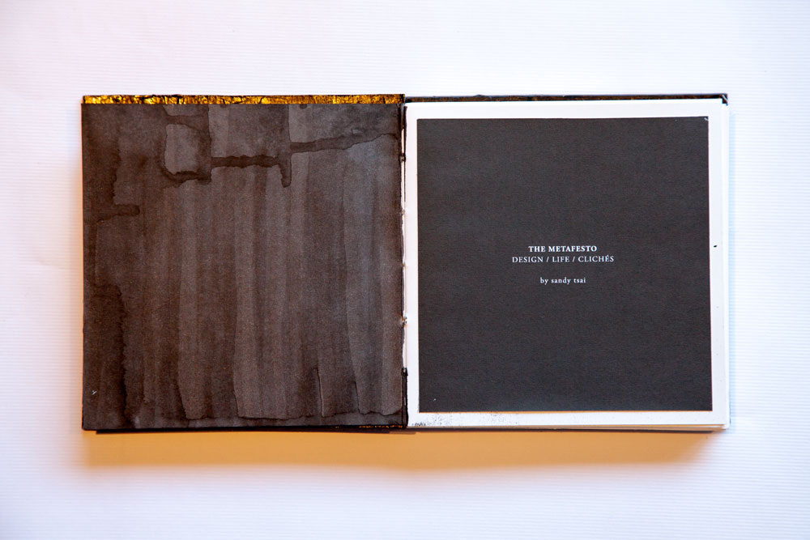
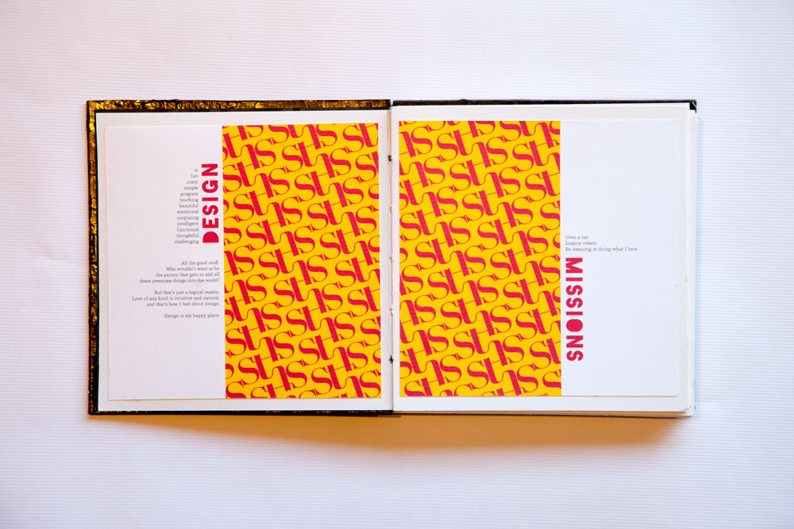
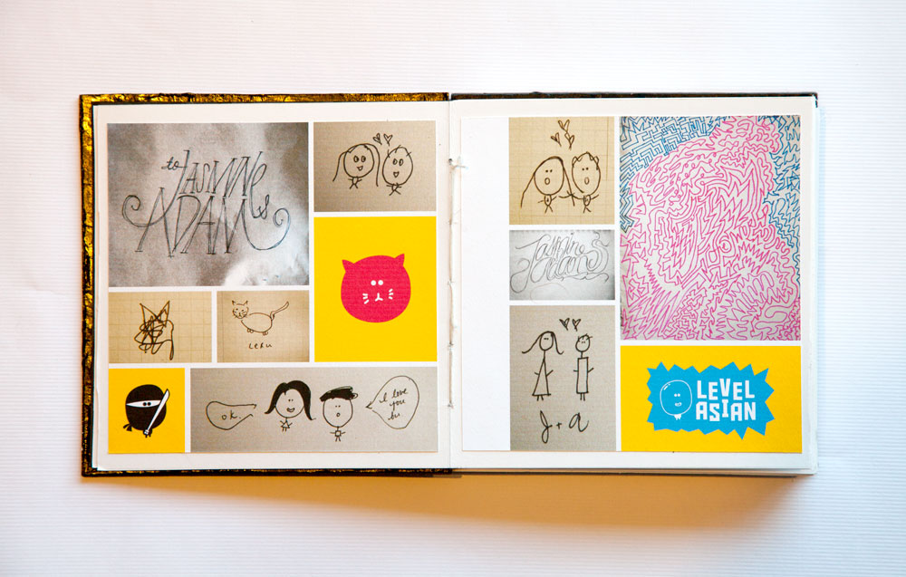

The Metafesto
This is a personal book project that I designed and hand-bound together. It is a collection of handlettered type about "design/life/cliches." The title is handlettered and a play on the words "meta" and "manifesto." The first spread is my personal design and life manifesto, and the second spread is a collection of sketches, doodles, and illustrations from work I created.


I wanted to experiment with material and textures, so the cover interior was made using many layers of gesso and covered with glossy black ink. I had never worked with gesso before, so I did not know how it would turn out, but I was very happy with the results. I liked the imperfections from the ink, and I also left the binding thread out make the hand made construction visible.

I painted the inside cover with black ink, and was happy with the imperfect drip textures that resulted.


Even though the cover has more of a classic sophisticated style, I wanted my "designs mission" spread to be playful to contrast with the black elegant exterior.